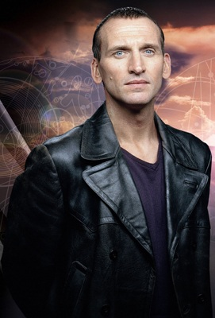

Dokuzuncu Doktor

Dokuzuncu Doktor, Doctor Who adlı İngiliz bilim-kurgu dizisine adını veren Doktor'un 9. enkarnasyonu. 2005 yılında Christopher Eccleston tarafından canlandırılmıştır. Daha sonra Christopher diziden ayrılınca 9. Doctor "The Parting of the Ways" bölümünde yerini Onuncu Doktor'a bırakmıştır.
9. Doctor Son Büyük Zaman Savaşın'dan TARDIS ile kurtulmayı başarmıştır. Daha sonra kendi ırkı olan Zaman Lordları'nın savaş sırasında sapması üzerine onları, Dalek'leri ve bütün savaşı Zaman Kilidi'ne hapsetmiştir. 9. Doctor bu yüzden olanlar'dan dolayı suçluluk duygusu duymaktadır.
9. Doctor'un yardımcıları arasında Rose Tyler, Adam Mitchell ve Jack Harkness sayılabilir.
9. Doctor Zaman Savaşın'da olanlar yüzünden hüzünlüdür. Fakat çoğu zaman mutludur ve şaka yapmayı sever. Muzlara bayılır bir bölümde Jack'e Muzlara bayılırım.Muzlar iyidir demiştir. 9. Doctor rejenerasyon anında bile mutluluğundan hiçbir şey kaybetmiştir. Her şey'e pozitif bakar ve düşünür.
9. Doctor Dalek'leri sevmez ve onlara olan öfkesini kolayca dışarı vurur. End Of World ve Parting Of Ways bölümün'de 9. Doctor Dalek'lere olan öfkesini açıkça göstermiştir.
Dalek bölümün'de ise 9. Doctor kalan son Dalek sandığı Dalek'i yok etmek için elinden geleni yapmıştır.
9. Doctor Parting Of Ways bölümünde Dalek'lere karşı savaşırken Rose'u TARDİS'le evine geri gönderir. Fakat Rose Doctor'un yanına dönmek için yol ararken TARDİS'in kalbine yani Saf Zaman Girdabı'na bakar. TARDİS'le birlikte Doctor'un yanına döner. Zaman Girdabı'nın enerjisi ile Dalekler'i yokeder. 9. Doctor Rose'a kimsenin Zaman Girdabı'nın enerjisine dayanamayacığını söyler ve Rose'daki bütün Zaman enerjisini kendine alır. Fakat Doctor'un bedeni'de bu enerjiye dayanamaz. 9. Doctor TARDİS'de Rose'un yanında rejenerasyon geçirir ve yerini 10. Doctor'a bırakır.
9. Doctor'un son sözleri: Rose...Sen olağanüstüydün gerçekten öyleydin. Ve ne vardı biliyor musun bende öyleydim olmuştur.
Christopher Eccleston Doctor Who'da 2005 Modern Seri'nin ilk sezonun'da 13 bölüm oynamıştır.
Dizide az bulunması sebebiyle 9. Doctor pek fazla popüler bir Doctor olamamıştır. Yine'de Doctor Who hayranları'nın bir kısmı'nın sevgisini kazanmıştır.